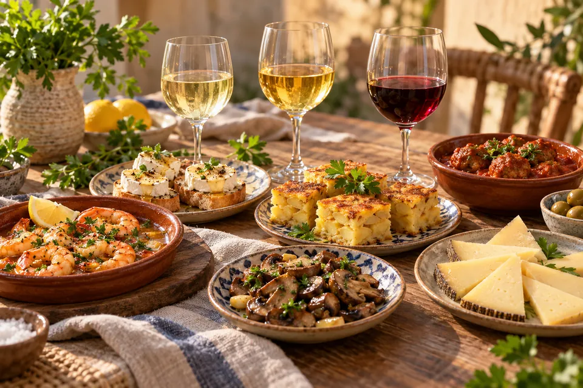
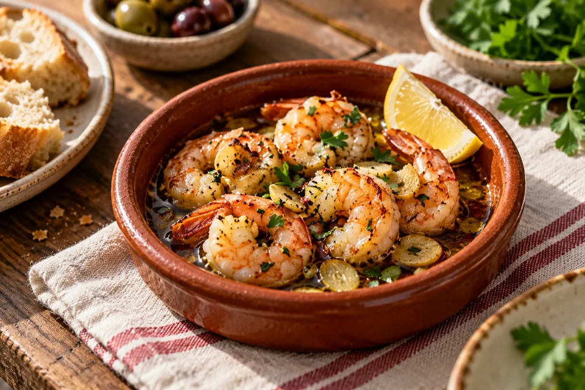

DE TAFEL IS GEDEKT
Kleine gerechten.
Grote gezelligheid.
Een tafel vol schaaltjes, een goed gekozen glas en alle tijd voor elkaar. Welkom bij Aan Tafel & In het Glas.
Ontdek de tapasavond ↗3 wijnstijlen · 15 tapasideeën · 1 gezellige avond

VERS VAN DE BLOG · 29 OKTOBER 2026

WIJN & TAPAS
Welke wijn bij tapas? 3 wijnen en 15 heerlijke combinaties
Van frisse geitenkaascrostini tot hartige albóndigas. Ontdek drie rondes vol smaak, met bij elk hapje een wijn die erbij past.
Lees het verhaal →AAN TAFEL MET DENNIS
Lekker eten hoeft niet ingewikkeld te zijn.
Deze persoonlijke blog draait om kleine gerechten, fijne wijncombinaties en avonden die niet op de klok hoeven. Hier vind je inspiratie om zelf te koken, te proeven en te delen.
De eerste blogpost begint met drie wijnstijlen: Sauvignon Blanc, licht houtgerijpte Chardonnay en Rioja Crianza. Jij kiest welke schaaltjes op tafel komen.